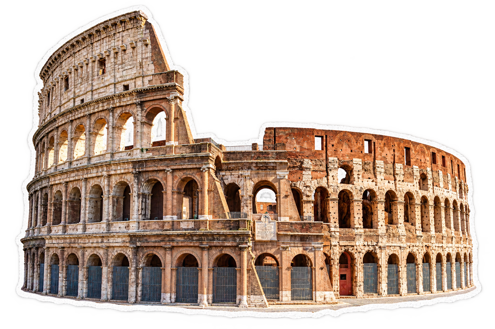
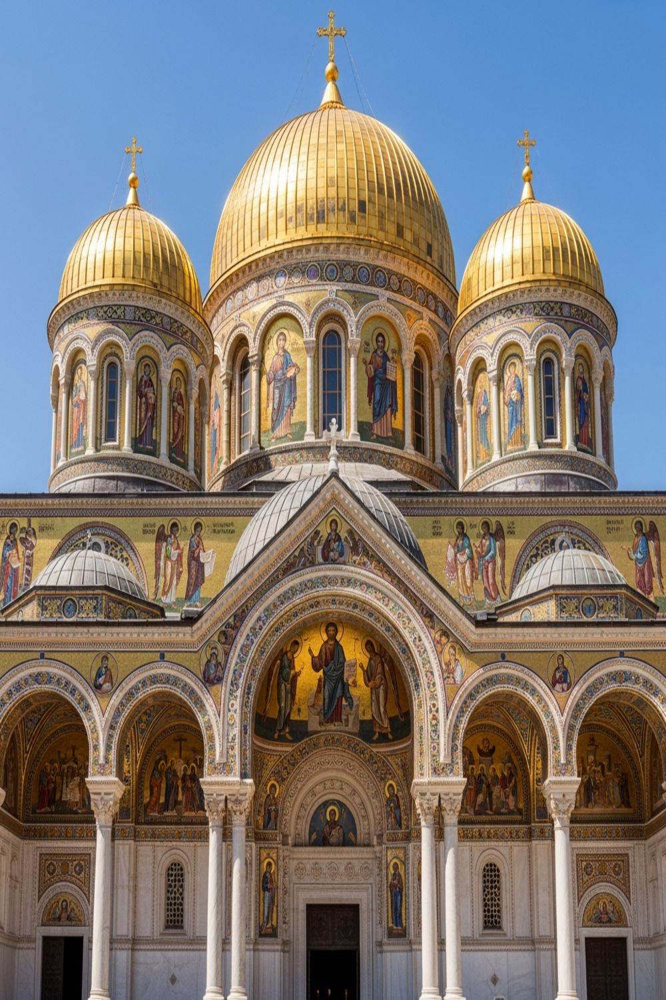
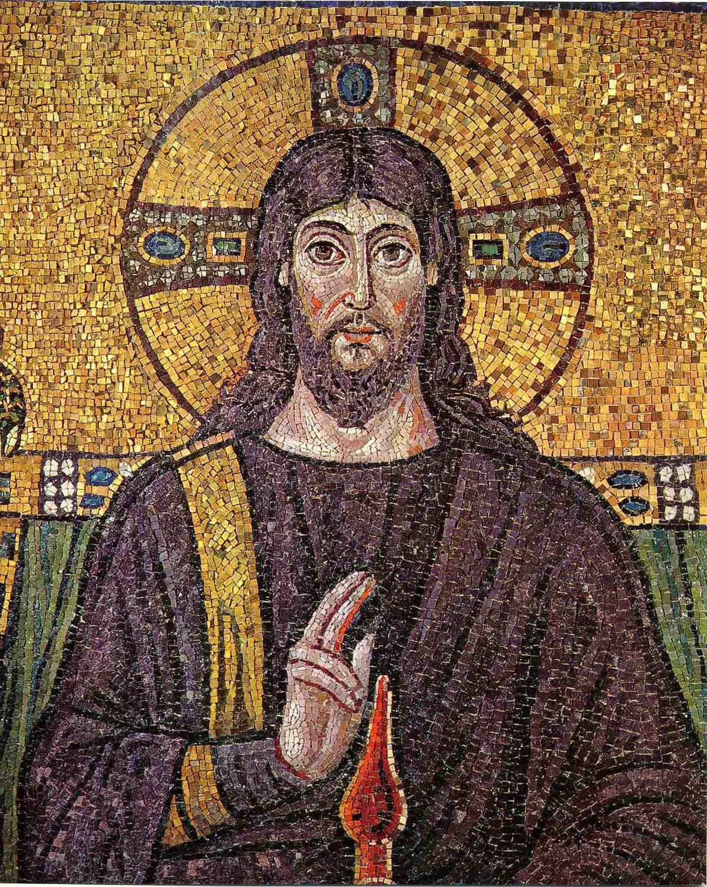
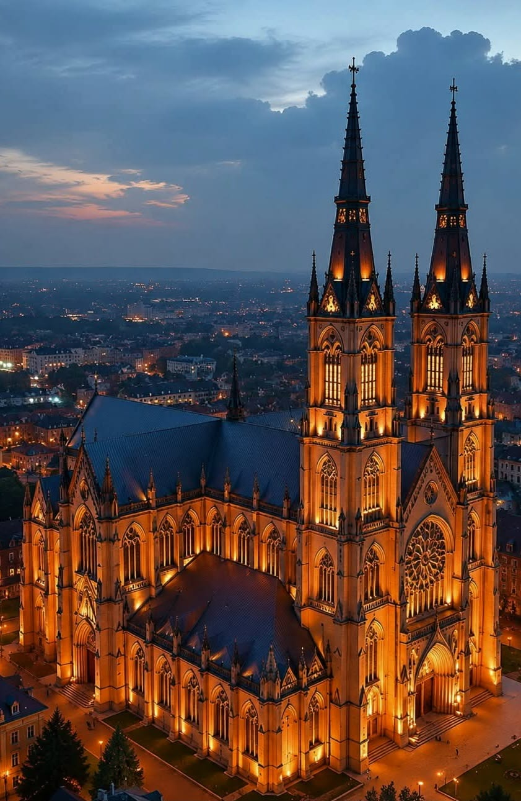
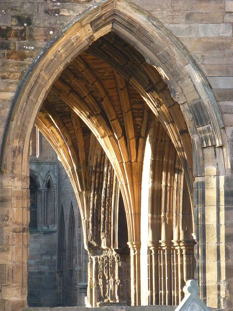
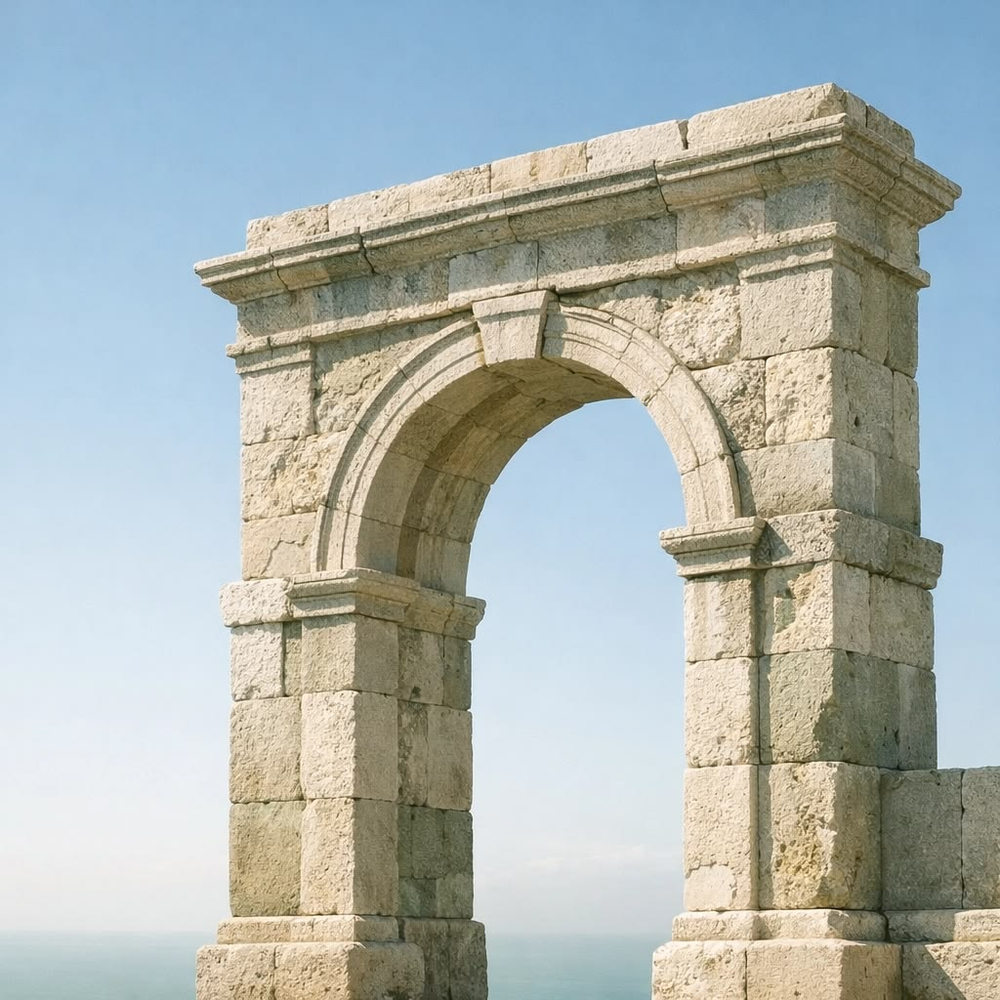
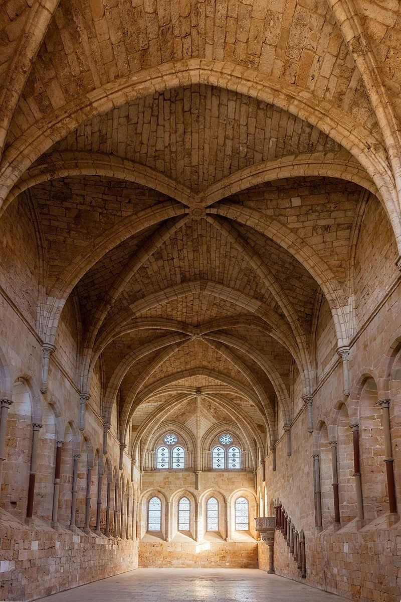
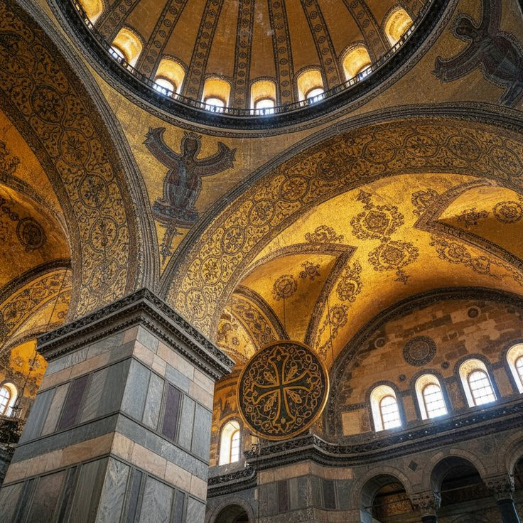
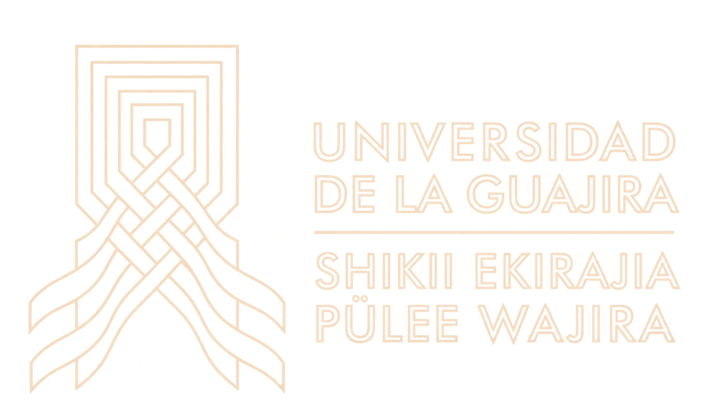

REVISTA DIGITAL · VOL. 1 · N.º 1 · EDICIÓN 2026
Historiade laArquitectura

01 / 03
Una mirada
a la historia
Este sitio reúne cuatro revistas digitales sobre los grandes estilos del arte medieval: bizantino, románico y gótico. Cada una explora cómo la arquitectura y el arte se transformaron a través de los siglos, desde las basílicas de Constantinopla hasta las catedrales de Europa.
Las revistas combinan rigor histórico con diseño editorial, pensadas para leerse en pantalla y para guardarse como referencia.

Colección digital · 2026
Tres revistas
del arte medieval
Estilos
Arte medieval
a través del tiempo



Elementos de
cada estilo
Cada estilo medieval aportó soluciones arquitectónicas únicas: el arco de medio punto románico, la bóveda de crucería gótica y la cúpula sobre pechinas bizantina.

Arco de medio punto
Románico · Robustez

Bóveda de crucería
Gótico · Verticalidad

Cúpula sobre pechinas
Bizantino · Espacialidad
Colección digital
Historia de la
Arquitectura I
Edición 2026 · Formato PDF digital
- Colección
- Historia de la Arquitectura I
- Formato
- PDF digital
- Año
- 2026
- Docente encargada
- Arq. Carolina Pinedo
- Materia
- Historia del Arte y Arquitectura I
- Institución
-

Universidad de La Guajira - Desarrollo web
- Andrés Elias Rodríguez Botero
La arquitectura
también se lee.
Explora las cuatro revistas digitales de Historia de la Arquitectura I.